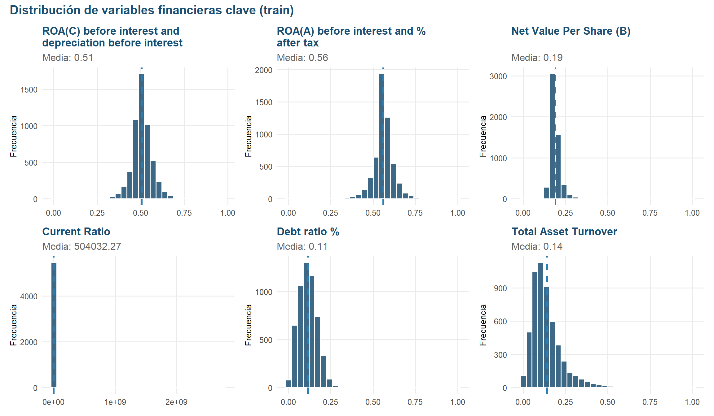

Capítulo 4 Análisis univariado (sobre train)
4.1 Estadísticas descriptivas
resumen <- train_df %>%
select(all_of(num_vars)) %>%
summarise(across(
everything(),
list(mean = ~mean(.x, na.rm = TRUE), median = ~median(.x, na.rm = TRUE),
sd = ~sd(.x, na.rm = TRUE), min = ~min(.x, na.rm = TRUE),
max = ~max(.x, na.rm = TRUE), q25 = ~quantile(.x, 0.25, na.rm = TRUE),
q75 = ~quantile(.x, 0.75, na.rm = TRUE)),
.names = "{.col}__{.fn}"
)) %>%
pivot_longer(everything(), names_to = c("variable", ".value"),
names_sep = "__")
resumen %>%
slice(1:5) %>%
kable(digits = 3, caption = "Estadísticas descriptivas (primeras 5 variables)") %>%
kable_styling(bootstrap_options = c("striped", "hover"), full_width = FALSE)| variable | mean | median | sd | min | max | q25 | q75 |
|---|---|---|---|---|---|---|---|
| ROA(C) before interest and depreciation before interest | 0.505 | 0.503 | 0.061 | 0 | 0.972 | 0.477 | 0.536 |
| ROA(A) before interest and % after tax | 0.559 | 0.560 | 0.065 | 0 | 1.000 | 0.536 | 0.589 |
| ROA(B) before interest and depreciation after tax | 0.554 | 0.553 | 0.062 | 0 | 1.000 | 0.528 | 0.585 |
| Operating Gross Margin | 0.608 | 0.606 | 0.018 | 0 | 1.000 | 0.600 | 0.614 |
| Realized Sales Gross Margin | 0.608 | 0.606 | 0.018 | 0 | 1.000 | 0.600 | 0.614 |
Las escalas son muy distintas entre variables (algunas van de 0 a 1, otras tienen valores en miles). Esto ya nos dice que, para cualquier modelo sensible a la escala (como regresión logística, SVM o PCA), va a hacer falta estandarizar las variables en el pipeline de preprocesamiento.
4.2 Variables con varianza cercana a cero
varianzas <- sapply(train_df[num_vars], var, na.rm = TRUE)
vars_bajas <- varianzas[varianzas < 1e-6]
cat("Variables con varianza baja:", length(vars_bajas), "\n")## Variables con varianza baja: 1if (length(vars_bajas) > 0) {
print(vars_bajas)
} else {
cat("Ninguna variable numérica tiene varianza cercana a cero en train.\n")
}## Total income/Total expense
## 2.229908e-07Con este resultado confirmamos que, entre las variables numéricas, ninguna es
prácticamente constante en train. Todas tienen variabilidad real y suficiente entre
empresas.
4.3 Distribución de variables financieras clave
A continuación se eligen 6 variables que cubren 5 ángulos distintos de la salud financiera de una empresa, sin repetirse:
Rentabilidad
- ROA(C) before interest and depreciation before interest: Retorno sobre Activos (Return on Assets), calculado antes de restar intereses y depreciación. Mide cuánta ganancia genera la empresa por cada peso invertido en sus activos.
- ROA(A) before interest and % after tax: Otra versión del Retorno sobre Activos, calculada después de impuestos.
Valor real para el dueño
- Net Value Per Share (B): Valor contable por acción; qué tanto “vale en libros” cada acción de la empresa.
Liquidez
- Current Ratio: Activos corrientes entre pasivos corrientes; qué tan fácil es para la empresa pagar sus deudas de corto plazo.
Endeudamiento
- Debt ratio %: Qué porcentaje de los activos de la empresa está financiado con deuda.
Eficiencia operativa
- Total Asset Turnover: Qué tan eficientemente la empresa usa sus activos para generar ventas.
variables_key <- c(
"ROA(C) before interest and depreciation before interest",
"ROA(A) before interest and % after tax",
"Net Value Per Share (B)",
"Current Ratio",
"Debt ratio %",
"Total Asset Turnover"
)
variables_key <- variables_key[variables_key %in% names(train_df)]
plot_hist <- function(var) {
media <- mean(train_df[[var]], na.rm = TRUE)
ggplot(train_df, aes(x = .data[[var]])) +
geom_histogram(bins = 30, fill = COLOR_MAIN, color = "white", alpha = 0.85) +
geom_vline(xintercept = media, color = COLOR_ACCENT, linetype = "dashed",
linewidth = 0.9) +
labs(title = str_wrap(var, 32), x = NULL,
y = "Frecuencia", subtitle = sprintf("Media: %.2f", media)) +
tema_eda
}
wrap_plots(lapply(variables_key, plot_hist), ncol = 3) +
plot_annotation(title = "Distribución de variables financieras clave (train)",
theme = theme(plot.title = element_text(face = "bold", size = 15)))
- ROA(C) before interest and depreciation: La mayoría de los valores se concentra alrededor de 0.5. La distribución presenta una ligera asimetría hacia la derecha y algunos valores alejados del centro.
- ROA(A) before interest and % after tax: La distribución también se concentra cerca de 0.55 y presenta una ligera asimetría hacia la derecha. Se observan algunos valores extremos en ambos lados, aunque la mayor parte de los datos se encuentra en un rango reducido.
- Net Value Per Share (B): Los valores se concentran principalmente alrededor de 0.18–0.20. La distribución está sesgada hacia la derecha, con una cola que se extiende hasta valores cercanos a 0.5.
- Current Ratio: Presenta una fuerte asimetría hacia la derecha. La mayoría de las empresas tiene valores cercanos a 0, mientras que unas pocas presentan valores mucho más altos. Esto indica la presencia de valores extremos que podrían influir en algunos análisis estadísticos.
- Debt ratio %: La mayor parte de los valores se concentra aproximadamente entre 0.05 y 0.20. La distribución presenta asimetría positiva, con una cola hacia valores más altos.
- Total Asset Turnover: Los valores se concentran principalmente entre 0.05 y 0.20 y la distribución está sesgada hacia la derecha. Hay algunas empresas con valores considerablemente mayores que la mayoría.
En general, las variables presentan distribuciones diferentes. Los indicadores Current Ratio, Debt Ratio y Total Asset Turnover muestran una asimetría positiva más marcada y posibles valores extremos. Estos casos deben revisarse en etapas posteriores antes de decidir si requieren algún tratamiento.
4.4 Distribución de la variable objetivo
conteo <- table(train_df[[TARGET]])
porcentaje <- prop.table(conteo) * 100
cat("Total de empresas en train:", nrow(train_df), "\n")## Total de empresas en train: 5456## No quebradas (0): 5269 (96.57%)## Quebradas (1): 187 (3.43%)## Ratio de desbalance: 28.2 : 1df_plot <- tibble(clase = names(conteo), n = as.numeric(conteo)) %>%
mutate(label = TARGET_LABELS[clase], pct = n / sum(n) * 100)
p_barras <- ggplot(df_plot, aes(x = label, y = n, fill = clase)) +
geom_col(width = 0.6) +
geom_text(aes(label = sprintf("%s\n(%.2f%%)", comma(n), pct)),
vjust = -0.3, fontface = "bold", size = 3.5) +
scale_fill_manual(values = TARGET_COLORS) +
labs(title = "Conteo de empresas por clase (train)", x = NULL,
y = "Número de empresas") +
ylim(0, max(df_plot$n) * 1.2) +
tema_eda
p_dona <- ggplot(df_plot, aes(x = 2, y = pct, fill = clase)) +
geom_col(color = "white", linewidth = 1.2) +
coord_polar(theta = "y") +
xlim(0.5, 2.5) +
scale_fill_manual(values = TARGET_COLORS, labels = TARGET_LABELS,
name = NULL) +
geom_text(aes(label = sprintf("%.2f%%", pct)),
position = position_stack(vjust = 0.5), color = "white",
fontface = "bold") +
labs(title = "Proporción de empresas por clase (train)") +
theme_void() +
theme(plot.title = element_text(face = "bold", size = 13, color = COLOR_MAIN,
hjust = 0.5),
legend.position = "right")
p_barras + p_dona
En palabras cortas: La variable objetivo presenta un fuerte desbalance de clases, ya que las empresas en quiebra representan solo el 3,23 % del conjunto de entrenamiento. Este desbalance deberá tenerse en cuenta durante el entrenamiento y la evaluación del modelo.